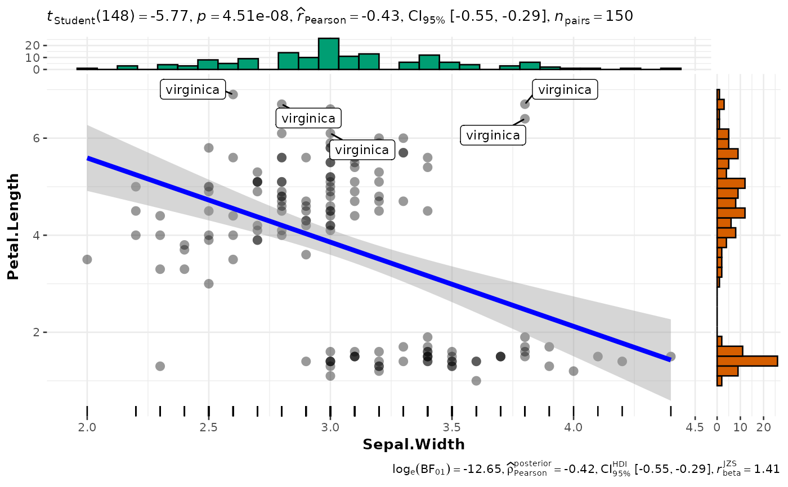

R/ggscatterstats.R
ggscatterstats.RdScatterplots from {ggplot2} combined with marginal densigram (density +
histogram) plots with statistical details.
ggscatterstats(
data,
x,
y,
type = "parametric",
conf.level = 0.95,
bf.prior = 0.707,
bf.message = TRUE,
tr = 0.2,
k = 2L,
results.subtitle = TRUE,
label.var = NULL,
label.expression = NULL,
marginal = TRUE,
point.args = list(size = 3, alpha = 0.4, stroke = 0),
point.width.jitter = 0,
point.height.jitter = 0,
point.label.args = list(size = 3, max.overlaps = 1e+06),
smooth.line.args = list(linewidth = 1.5, color = "blue", method = "lm", formula = y ~
x),
xsidehistogram.args = list(fill = "#009E73", color = "black"),
ysidehistogram.args = list(fill = "#D55E00", color = "black"),
xlab = NULL,
ylab = NULL,
title = NULL,
subtitle = NULL,
caption = NULL,
ggtheme = ggstatsplot::theme_ggstatsplot(),
ggplot.component = NULL,
...
)A data frame (or a tibble) from which variables specified are to
be taken. Other data types (e.g., matrix,table, array, etc.) will not
be accepted. Additionally, grouped data frames from {dplyr} should be
ungrouped before they are entered as data.
The column in data containing the explanatory variable to be
plotted on the x-axis.
The column in data containing the response (outcome) variable to
be plotted on the y-axis.
A character specifying the type of statistical approach:
"parametric"
"nonparametric"
"robust"
"bayes"
You can specify just the initial letter.
Scalar between 0 and 1 (default: 95%
confidence/credible intervals, 0.95). If NULL, no confidence intervals
will be computed.
A number between 0.5 and 2 (default 0.707), the prior
width to use in calculating Bayes factors and posterior estimates. In
addition to numeric arguments, several named values are also recognized:
"medium", "wide", and "ultrawide", corresponding to r scale values
of 1/2, sqrt(2)/2, and 1, respectively. In case of an ANOVA, this value
corresponds to scale for fixed effects.
Logical that decides whether to display Bayes Factor in
favor of the null hypothesis. This argument is relevant only for
parametric test (Default: TRUE).
Trim level for the mean when carrying out robust tests. In case
of an error, try reducing the value of tr, which is by default set to
0.2. Lowering the value might help.
Number of digits after decimal point (should be an integer)
(Default: k = 2L).
Decides whether the results of statistical tests are
to be displayed as a subtitle (Default: TRUE). If set to FALSE, only
the plot will be returned.
Variable to use for points labels entered as a symbol (e.g.
var1).
An expression evaluating to a logical vector that
determines the subset of data points to label (e.g. y < 4 & z < 20).
While using this argument with purrr::pmap, you will have to provide a
quoted expression (e.g. quote(y < 4 & z < 20)).
Decides whether marginal distributions will be plotted on
axes using ggside functions. The default is TRUE. The package
ggside must already be installed by the user.
A list of additional aesthetic arguments to be passed
to geom_point geom used to display the raw data points.
Degree of jitter in x and y
direction, respectively. Defaults to 0 (0%) of the resolution of the
data. Note that the jitter should not be specified in the point.args
because this information will be passed to two different geoms: one
displaying the points and the other displaying the *labels for
these points.
A list of additional aesthetic arguments to be passed
to ggrepel::geom_label_repel geom used to display the labels.
A list of additional aesthetic arguments to be passed
to geom_smooth geom used to display the regression line.
A list of arguments passed to
respective geom_s from ggside package to change the marginal
distribution histograms plots.
Label for x axis variable. If NULL (default),
variable name for x will be used.
Labels for y axis variable. If NULL (default),
variable name for y will be used.
The text for the plot title.
The text for the plot subtitle. Will work only if
results.subtitle = FALSE.
The text for the plot caption. This argument is relevant only
if bf.message = FALSE.
A {ggplot2} theme. Default value is
ggstatsplot::theme_ggstatsplot(). Any of the {ggplot2} themes (e.g.,
theme_bw()), or themes from extension packages are allowed (e.g.,
ggthemes::theme_fivethirtyeight(), hrbrthemes::theme_ipsum_ps(), etc.).
But note that sometimes these themes will remove some of the details that
{ggstatsplot} plots typically contains. For example, if relevant,
ggbetweenstats() shows details about multiple comparison test as a label
on the secondary Y-axis. Some themes (e.g.
ggthemes::theme_fivethirtyeight()) will remove the secondary Y-axis and
thus the details as well.
A ggplot component to be added to the plot prepared
by {ggstatsplot}. This argument is primarily helpful for grouped_
variants of all primary functions. Default is NULL. The argument should
be entered as a {ggplot2} function or a list of {ggplot2} functions.
Currently ignored.
For details, see: https://indrajeetpatil.github.io/ggstatsplot/articles/web_only/ggscatterstats.html
The plot uses ggrepel::geom_label_repel() to attempt to keep labels
from over-lapping to the largest degree possible. As a consequence plot
times will slow down massively (and the plot file will grow in size) if you
have a lot of labels that overlap.
| graphical element | geom used | argument for further modification |
| histogram bin | ggplot2::stat_bin() | bin.args |
| centrality measure line | ggplot2::geom_vline() | centrality.line.args |
| normality curve | ggplot2::stat_function() | normal.curve.args |
The table below provides summary about:
statistical test carried out for inferential statistics
type of effect size estimate and a measure of uncertainty for this estimate
functions used internally to compute these details
Hypothesis testing and Effect size estimation
| Type | Test | CI available? | Function used |
| Parametric | Pearson's correlation coefficient | Yes | correlation::correlation() |
| Non-parametric | Spearman's rank correlation coefficient | Yes | correlation::correlation() |
| Robust | Winsorized Pearson correlation coefficient | Yes | correlation::correlation() |
| Bayesian | Bayesian Pearson's correlation coefficient | Yes | correlation::correlation() |
set.seed(123)
library(ggside) # for plotting marginals
# creating a plot
p <- ggscatterstats(
iris,
x = Sepal.Width,
y = Petal.Length,
label.var = Species,
label.expression = Sepal.Length > 7.6
) +
ggplot2::geom_rug(sides = "b")
# looking at the plot
p
#> `stat_bin()` using `bins = 30`. Pick better value with `binwidth`.
#> `stat_bin()` using `bins = 30`. Pick better value with `binwidth`.

# extracting details from statistical tests
extract_stats(p)
#> $subtitle_data
#> # A tibble: 1 × 14
#> parameter1 parameter2 effec…¹ estim…² conf.…³ conf.…⁴ conf.…⁵ stati…⁶ df.er…⁷
#> <chr> <chr> <chr> <dbl> <dbl> <dbl> <dbl> <dbl> <int>
#> 1 Sepal.Width Petal.Len… Pearso… -0.428 0.95 -0.551 -0.288 -5.77 148
#> # … with 5 more variables: p.value <dbl>, method <chr>, n.obs <int>,
#> # conf.method <chr>, expression <list>, and abbreviated variable names
#> # ¹effectsize, ²estimate, ³conf.level, ⁴conf.low, ⁵conf.high, ⁶statistic,
#> # ⁷df.error
#>
#> $caption_data
#> # A tibble: 1 × 17
#> parame…¹ param…² effec…³ estim…⁴ conf.…⁵ conf.…⁶ conf.…⁷ pd rope.…⁸ prior…⁹
#> <chr> <chr> <chr> <dbl> <dbl> <dbl> <dbl> <dbl> <dbl> <chr>
#> 1 Sepal.W… Petal.… Bayesi… -0.422 0.95 -0.551 -0.290 1 0 beta
#> # … with 7 more variables: prior.location <dbl>, prior.scale <dbl>, bf10 <dbl>,
#> # method <chr>, n.obs <int>, conf.method <chr>, expression <list>, and
#> # abbreviated variable names ¹parameter1, ²parameter2, ³effectsize,
#> # ⁴estimate, ⁵conf.level, ⁶conf.low, ⁷conf.high, ⁸rope.percentage,
#> # ⁹prior.distribution
#>
#> $pairwise_comparisons_data
#> NULL
#>
#> $descriptive_data
#> NULL
#>
#> $one_sample_data
#> NULL
#>
#> $tidy_data
#> NULL
#>
#> $glance_data
#> NULL
#>